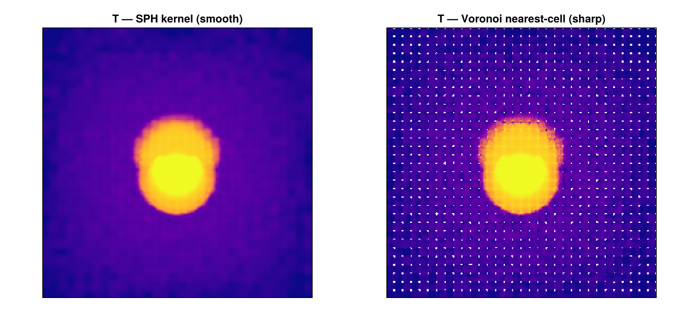

Other Simulation Codes — Worked Examples
This page is the executed 16_multi_OtherCodes notebook — real snapshots, real outputs. It loads PLUTO / Chombo / Athena++ / FLASH / GADGET and the AREPO/IllustrisTNG gas workflow end-to-end. See Multi-code support for the overview.
Mera began as a RAMSES tool, but its analysis layer is code-blind — it works on a generic uniform/AMR cell list (or particle list), not on RAMSES file formats. So the same calls (getvar, projection, subregion, timeseries, savedata, …) run on data from several codes:
| Code | grid / particles | what this notebook shows |
|---|---|---|
| PLUTO (uniform + Chombo-AMR) | grid | load, getvar |
| Athena++ | AMR grid + MHD | MHD field, load-time sub-region |
| FLASH | AMR grid | a self-gravity potential field |
| GADGET (+ GIZMO/AREPO/SWIFT/TNG) | particles + gas cells | getparticles, gas ρ/T/Z, SPH maps |
It also covers self-gravity, chemistry and radiative-transfer fields, and converting any code to a Mera file. See the Multi-code support docs for the full reference.
The test snapshots live under
MERA_TEST_DATA(download the synthetic/sample data, or point the path at your own runs).
using Mera
base = get(ENV, "MERA_TEST_DATA", "/Volumes/FASTStorage/Simulations/Mera-Tests")*__ __ _______ ______ _______
| |_| | | _ | | _ |
| | ___| | || | |_| |
| | |___| |_||_| |
| | ___| __ | |
| ||_|| | |___| | | | _ |
|_| |_|_______|___| |_|__| |__|
Mera v1.8.0
"/Volumes/FASTStorage/Simulations/Mera-Tests"PLUTO (uniform grid)
getinfo auto-detects the code from the directory's signature files and prints the same overview a RAMSES snapshot would; gethydro then returns an ordinary HydroDataType.
info = getinfo(5, joinpath(base, "pluto_sedov3d")) # auto-detects PLUTO
gas = gethydro(info, verbose=false)
maximum(getvar(gas, :rho)) # the usual analysis, unchanged[0m[1m[Mera]: 2026-06-26T10:54:31.854[22m
Code: PLUTO
output: 5 time: 0.5 [code units]
grid: 64³ uniform Cartesian, level 6, boxlen = 1.0
variables: (rho, vx, vy, vz, p)
-------------------------------------------------------
4.040484204505616Chombo (PLUTO-AMR)
PLUTO's AMR output (the Chombo HDF5 format) loads as a Mera AMR object with a :level column.
gc = gethydro(getinfo(0, joinpath(base, "chombo_3d/IsothermalSphere"), verbose=false), verbose=false)
sort(unique(getvar(gc, :level))) # the refinement levels present2-element Vector{Float64}:
6.0
7.0Athena++ (AMR MHD) + a load-time sub-region
Athena++ .athdf snapshots carry cell-centred MHD, so :bx/:by/:bz and derived :bmag work. The spatial-window arguments load only part of the box (reading only the intersecting MeshBlocks).
ia = getinfo(5, joinpath(base, "athena_blast")) # a self-built 3-D MHD blast
ga = gethydro(ia, verbose=false)
@show maximum(getvar(ga, :bmag)); # magnetic field strength
# central 20% box — only the intersecting blocks are read
gsub = gethydro(ia; xrange=[-0.1,0.1], yrange=[-0.1,0.1], zrange=[-0.1,0.1],
center=[:bc], range_unit=:standard, verbose=false)
length(gsub.data), length(ga.data) # sub-region ≪ full snapshot[0m[1m[Mera]: 2026-06-26T10:54:44.250[22m
Code: Athena++
output: 5 time: 0.50111 [code units]
root grid: 32³ (level 5), MaxLevel 2 ⇒ levels 5:7, boxlen = 2.0
MeshBlocks: 148 variables: (rho, p, vx, vy, vz, bx, by, bz)
-------------------------------------------------------
maximum(getvar(ga, :bmag)) = 1.1211309571451635
(15625, 606208)FLASH
FLASH plot files load as AMR hydro/MHD; a self-gravity potential (if present) appears as :gpot.
gf = gethydro(getinfo(150, joinpath(base, "flash_gassloshing/GasSloshing"), verbose=false), verbose=false)
:gpot in gf.info.variable_listtrueGADGET / GIZMO / AREPO / SWIFT / IllustrisTNG (particles)
GADGET HDF5 is particle-based, so it loads through getparticles into a PartDataType. :family is the particle type (0 gas, 1 DM, 2 disk, 3 bulge, 4 stars, 5 BH); families= selects a subset.
ig = getinfo(200, joinpath(base, "gadget_diskgalaxy/GadgetDiskGalaxy"))
stars = getparticles_gadget(ig; families=[4]) # just the star particles
length(stars.data), msum(stars) > 0[0m[1m[Mera]: 2026-06-26T10:55:09.490[22m
Code: GADGET
output: 200 time: 0.34483 redshift: 1.9
boxlen =
64000.0
particles: 4334546 gas, 4786616 halo/DM, 2333848 disk, 450921 stars, 1149 bndry/BH (total 11907080)
-------------------------------------------------------
[Mera]: GADGET particles = 450921, families 4
(x,y,z,vx,vy,vz,mass,id,family)
(450921, true)AREPO / IllustrisTNG — gas-cell physics
For gas (PartType0) the Voronoi-cell fields are read too, so the full thermodynamic analysis runs in physical units (comoving→physical a/h is applied automatically for cosmological runs). Below: a real IllustrisTNG halo cutout.
it = getinfo(59, joinpath(base, "arepo/TNGHalo/TNGHalo/halo_59.hdf5")) # IllustrisTNG (AREPO)
gas = getparticles_gadget(it; families=[0]) # PartType0 gas → :rho,:u,:ne,:metallicity,:sfr,:volume + :T
println("gas cells : ", length(gas.data))
println("rho [g/cm³] : ", extrema(getvar(gas, :rho, :g_cm3)))
println("T [K] : ", extrema(getvar(gas, :T)))
println("metallicity : ", extrema(getvar(gas, :metallicity)))[0m[1m[Mera]: 2026-06-26T10:55:11.032[22m
Code: AREPO
output: 59 time: 1.0 redshift: 0.0
boxlen = 205000.0
particles: 4006794 gas, 5567314 halo/DM, 533034 stars (total 10107142)
-------------------------------------------------------
[Mera]: GADGET particles = 4006794, families 0
(x,y,z,vx,vy,vz,mass,id,family,rho,u,ne,metallicity,sfr,volume)
gas cells : 4006794
rho [g/cm³] :
(1.3854807197342735e-30, 1.17827292777639e-22)
T [K] :
(17.965557996942835, 1.2925814640761332e8)
metallicity : (8.100937520794105e-8, 0.04447760060429573)# the usual reductions run unchanged on AREPO gas, in physical units
n = length(gas.data)
println("median T [K] : ", sort(getvar(gas, :T))[n ÷ 2])
println("median Z : ", sort(getvar(gas, :metallicity))[n ÷ 2])
println("gas mass [Msol]: ", msum(gas, :Msol))median T [K] : 1.436872560859919e7
median Z :
0.001993876649066806
gas mass [Msol]: 4.6930995577059625e13Box-filling maps — a full AREPO volume
The TNGHalo above is a halo cutout, so its gas is centrally concentrated. For maps that fill the frame, here is ArepoBullet — a full AREPO cluster-merger box (non-cosmological) whose gas fills the whole volume. Surface density and mass-weighted temperature (SPH kernel).
using CairoMakie, Statistics
ib = getinfo(150, joinpath(base, "arepo/ArepoBullet/ArepoBullet/snapshot_150.hdf5")) # AREPO cluster-merger box
bgas = getparticles_gadget(ib; families=[0])
sd = projection(bgas, :sd, :Msol_pc2, res=256, center=[:bc], weighting=:sph) # fills the frame
Tm = projection(bgas, :T, res=256, center=[:bc], weighting=:sph)
fig = Figure(size=(900, 400))
a1 = Axis(fig[1,1]; title="Sigma_gas (SPH) [Msol/pc^2]", aspect=DataAspect()); hidedecorations!(a1)
a2 = Axis(fig[1,2]; title="T (SPH) [K]", aspect=DataAspect()); hidedecorations!(a2)
heatmap!(a1, log10.(ifelse.(sd.maps[:sd] .> 0, sd.maps[:sd], NaN))'; colormap=:inferno)
heatmap!(a2, log10.(ifelse.(Tm.maps[:T] .> 0, Tm.maps[:T], NaN))'; colormap=:plasma)
fig[0m[1m[Mera]: 2026-06-26T10:55:17.019[22m
Code: AREPO
output: 150 time: 1.5381 redshift: 0.0
boxlen = 40000.0
particles: 12865831 gas, 13368238 halo/DM, 295531 stars (total 26529600)
-------------------------------------------------------
[Mera]: GADGET particles = 12865831, families 0
(x,y,z,vx,vy,vz,mass,id,family,rho,u,volume)
[0m[1m[Mera]: 2026-06-26T10:55:21.904[22m
center: [0.5, 0.5, 0.5] ==> [19.999 [Mpc] :: 19.999 [Mpc] :: 19.999 [Mpc]]
domain:
xmin::xmax: 0.0 :: 1.0 ==> 0.0 [Mpc] :: 39.999 [Mpc]
ymin::ymax: 0.0 :: 1.0 ==> 0.0 [Mpc] :: 39.999 [Mpc]
zmin::zmax: 0.0 :: 1.0 ==> 0.0 [Mpc] :: 39.999 [Mpc]
Effective resolution: 256^2
Pixel size: 156.246 [kpc]
Simulation min.: 19.999 [Mpc]
[0m[1m[Mera]: 2026-06-26T10:56:09.198[22m
center: [0.5, 0.5, 0.5] ==> [19.999 [Mpc] :: 19.999 [Mpc] :: 19.999 [Mpc]]
domain:
xmin::xmax: 0.0 :: 1.0 ==> 0.0 [Mpc] :: 39.999 [Mpc]
ymin::ymax: 0.0 :: 1.0 ==> 0.0 [Mpc] :: 39.999 [Mpc]
zmin::zmax: 0.0 :: 1.0 ==> 0.0 [Mpc] :: 39.999 [Mpc]
Effective resolution: 256^2
Pixel size: 156.246 [kpc]
Simulation min.: 19.999 [Mpc]SPH vs Voronoi on the same box-filling run: weighting=:sph (smooth, isotropic kernel — the conserving default) vs weighting=:voronoi (nearest-generator — sharp, showing the moving-mesh cells).
Ts = projection(bgas, :T; res=256, center=[:bc], weighting=:sph, verbose=false, show_progress=false)
Tv = projection(bgas, :T; res=256, center=[:bc], weighting=:voronoi, verbose=false, show_progress=false)
cr = Tuple(quantile(log10.(filter(>(0), Ts.maps[:T])), [0.02, 0.98])) # shared colour scale
fig2 = Figure(size=(900, 400))
b1 = Axis(fig2[1,1]; title="T — SPH kernel (smooth)", aspect=DataAspect()); hidedecorations!(b1)
b2 = Axis(fig2[1,2]; title="T — Voronoi nearest-cell (sharp)", aspect=DataAspect()); hidedecorations!(b2)
heatmap!(b1, log10.(ifelse.(Ts.maps[:T] .> 0, Ts.maps[:T], NaN))'; colormap=:plasma, colorrange=cr)
heatmap!(b2, log10.(ifelse.(Tv.maps[:T] .> 0, Tv.maps[:T], NaN))'; colormap=:plasma, colorrange=cr)
fig2
Self-gravity, chemistry & radiative transfer
Where a code writes these fields, the reader maps them to canonical names — so the same getvar call works across codes: :gpot (potential), :xHI/:xH2/:xCO (chemistry species), :Np1…:Np8 (radiation photon groups).
sg = gethydro(getinfo(2, joinpath(base, "athena_selfgravity"), verbose=false), verbose=false)
ch = gethydro(getinfo(5, joinpath(base, "athena_chemistry"), verbose=false), verbose=false)
rt = gethydro(getinfo(5, joinpath(base, "athena_sixray"), verbose=false), verbose=false)
(gpot = extrema(getvar(sg, :gpot)),
xH2 = maximum(getvar(ch, :xH2)), # H2 fraction (PDR chemistry)
Np1 = extrema(getvar(rt, :Np1))) # UV radiation field, attenuated by shielding(gpot = (-0.03948165848851204, 0.0446300245821476), xH2 = 0.4545285999774933, Np1 = (2.655466318130493, 7.641556739807129))Convert any code to a Mera file
savedata/loaddata round-trips any loaded object to Mera's portable JLD2 format — so a saved series even feeds timeseries(…; mera_files=true).
tmp = mktempdir()
savedata(ga, tmp; fmode=:write, verbose=false)
g2 = loaddata(5, tmp, :hydro; verbose=false)
length(g2.data) == length(ga.data) && getvar(g2, :rho) == getvar(ga, :rho)trueEvery call above is identical to what you'd run on a RAMSES snapshot — that is the whole point of the code-blind analysis layer. For per-code details (units, variable mapping, coordinate conventions, reference readers) see the Other Simulation Codes docs.